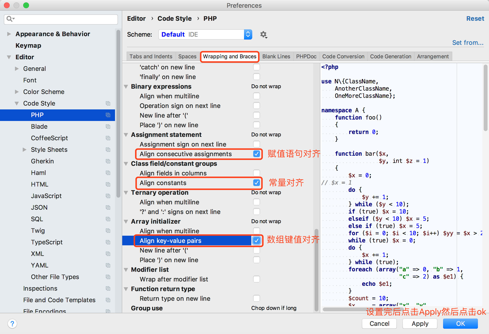
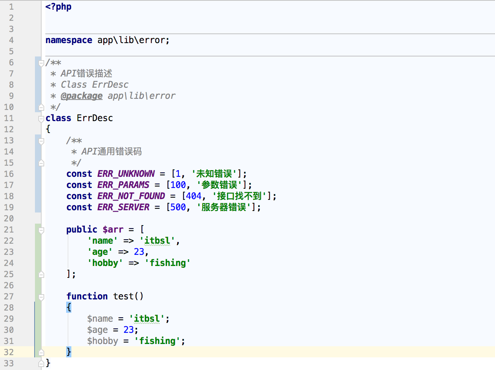
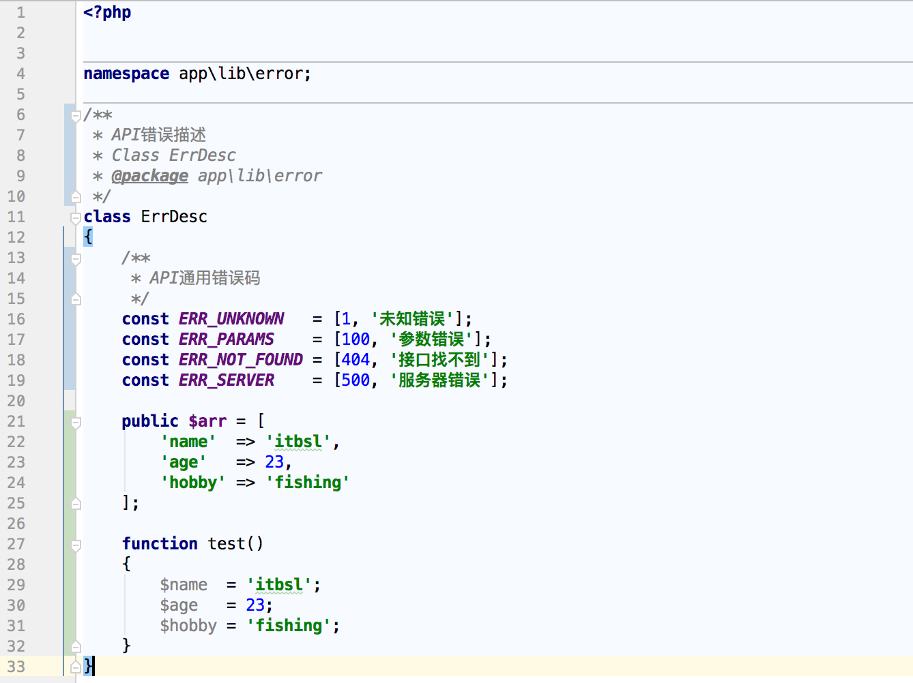

为了代码的美观，我们常常会把代码等号设置对齐，手动对齐的效率很低，PHPStrom提供了快捷键来一键对齐。 首先设置PHPStorm  设置完PHPStorm后，使用快捷键Command+Option+L(Mac), Control+Alt+L(windows)即可一键对齐 在使用快捷键对齐前是如下图  在使用快捷键对齐后效果如下图，是不是更美观一些呢 
Command+Option+L
Control+Alt+L